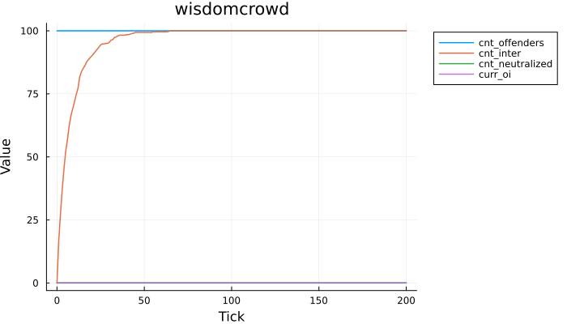
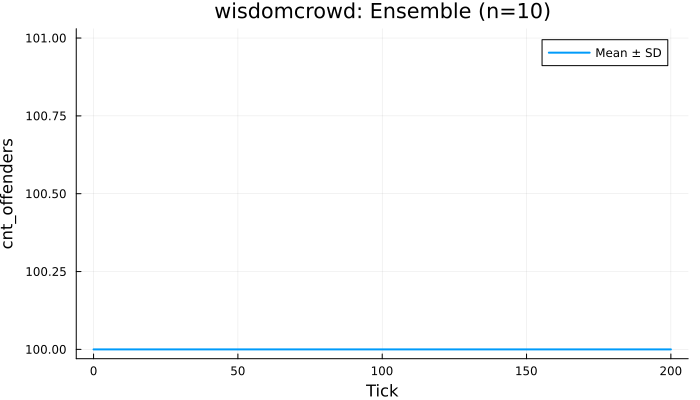
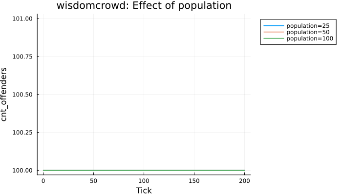

Wisdom of Crowd
Overview
WHAT IS IT?
A model of bystanders’ effect on volunteering (in case of an observed crime or critical situation) is extended to incorporate the possibility of a sense of guilt (after nonintervention). Based on sound theoretical and experimental foundations, an existing model of the spread of unpopular norms is used to allow dispersion of an unpopular norm (a mild crime) so that a population of agents may follow or accept it. The question asked is why a society (as a whole) is not able to overturn an unpopular norm through interventions. The model and simulation reveal that a sense of guilt of bystanders improves the volunteering tendency. The simulation results also provide pieces of evidence of clear differentiation between the individual and societal perception of a crime. This is an important result as it suggests that, in a certain situation and community, we can predict how people will react against an unpopular norm.
HOW IT WORKS
A model to study dynamics of co-evolution of the spread of Unpopular norms and guilt-driven volunteering (to intervene). In addition to the time dynamics, we have also introduced spatial dynamics, which allow the agents to have the capability to move (along with their states). The form of mobility introduced is random-walk.
THINGS TO NOTICE
UN alone
- As the radius of interaction increase, the DBs who end up complying the UN increase.
- Within a radius, as the initial % age of TBs increase, the DBs who end up complying the UN increase.
- Compliance jumps to highest level right at the start and then keep fluctuating across this highest level.
- As the population density increases, the DBs who end up complying the UN increase.
VD alone
- As the radius of interaction increase, the believers who end up as being neutralized by the volunteering effect decrease substantially.
- Within a radius, as the initial % age of TBs increase, the neutralization is rather unclear (no relationship can be drawn).
- Neutralization happens progressively (and in phases) with time and then stays constant.
- As the population density increases, neutralization tendency decreases.
Combined
A sense of guilt of bystanders improves the volunteering tendency as the spread of UN happens.
CREDITS AND REFERENCES
To appear: “When the Wisdom of Crowd is able to overturn an Unpopular Norm? Lessons learned from an Agent-Based Simulation” in ACM SIGSIM PADS 2021 scheduled on June 2021 (https://www.acm-sigsim-pads.org/).
Parameters
| Parameter | Type | Default | Description |
|---|---|---|---|
population | Int | 50 | population |
tb_perc | Int | 15 | tb perc |
K | Float64 | 0.5 | K |
threshold | Float64 | 0.5 | threshold |
radius | Float64 | 2.0 | radius |
crime_intensity | Int | 3 | crime intensity |
alpha | Float64 | 0.5 | alpha |
norm | Float64 | 0.5 | norm |
mobility | Bool | true | mobility |
incorporate_guilt | Bool | false | incorporate guilt |
max_ticks | Int | 200 | max ticks |
Source Code
The Julia code to run this model:
using ArkModelZoo
_, trajectory = run_wisdomcrowd()Time Series

Ensemble Runs
Ten replicates with different random seeds, showing mean ± standard deviation.

Parameter Sensitivity
Varying population.

Appendix: Source Code
This model is implemented in the Ark.jl Entity-Component-System (ECS) framework. The code is split into five files, each with a distinct role:
- Parameters: a mutable struct holding all configurable values.
- Components: lightweight data types attached to individual entities (agents).
- Resources: world-level shared state accessible to all systems.
- Systems: functions that operate on entities each tick, defining model behavior.
- Model: wiring that assembles the world, registers resources and systems, and provides the run entry point.
Parameters (parameters.jl)
The parameter struct uses @kwdef so that every field has a default value and can be overridden by keyword. These defaults match the original NetLogo model’s slider settings.
Base.@kwdef mutable struct WCParams
population::Int = 50
tb_perc::Int = 15
K::Float64 = 0.5
threshold::Float64 = 0.5
radius::Float64 = 2.0
crime_intensity::Int = 3
alpha::Float64 = 0.5
norm::Float64 = 0.5
mobility::Bool = true
incorporate_guilt::Bool = false
max_ticks::Int = 200
seed::Int = 42
endComponents (components.jl)
Components are lightweight data types attached to individual entities (agents). Mutable structs hold per-entity state, while empty tag structs act as markers for the ECS query system to efficiently filter entities.
struct WCDummy endResources (resources.jl)
Resources are world-level singletons shared across all systems, used for global state and aggregate statistics.
mutable struct WCState
n_agents::Int
x::Vector{Float64}
y::Vector{Float64}
heading::Vector{Float64}
belief::Vector{Int} # 1 (believer) or -1 (disbeliever)
compliance::Vector{Int} # 1 or -1
strength::Vector{Float64}
complying_for::Vector{Int}
property::Vector{Symbol} # :offender, :bystanders, :intervener, :neutralized
offender_index::Vector{Float64}
perform_intervention::Vector{Bool}
my_thresholds::Vector{Float64}
seriousness::Vector{Float64}
n_believers::Int
n_disbelievers::Int
end
function WCState()
WCState(0,
Float64[], Float64[], Float64[],
Int[], Int[], Float64[], Int[],
Symbol[], Float64[], Bool[], Float64[], Float64[],
0, 0)
end
mutable struct WCStats
cnt_offenders::Float64
cnt_inter::Float64
cnt_neutralized::Float64
curr_oi::Float64
end
WCStats() = WCStats(0.0, 0.0, 0.0, 0.0)Systems (systems.jl)
Systems contain the model logic and execute in a defined order each tick. Each system struct implements either initialize! (run once at setup) or update! (run every tick).
# --- Constants ---
const _WC_SPAN = 33
const _WC_HALF = 16.5
# --- Helpers ---
function _wc_wrap(v::Float64)
return mod(v + _WC_HALF, Float64(_WC_SPAN)) - _WC_HALF
end
function _wc_dist(x1::Float64, y1::Float64, x2::Float64, y2::Float64)
dx = abs(x1 - x2)
if dx > _WC_HALF
dx = Float64(_WC_SPAN) - dx
end
dy = abs(y1 - y2)
if dy > _WC_HALF
dy = Float64(_WC_SPAN) - dy
end
return sqrt(dx * dx + dy * dy)
end
function _wc_random_walk!(rng, state::WCState, idx::Int)
state.heading[idx] = mod(state.heading[idx] + Float64(rand(rng, 0:359)), 360.0)
θ = deg2rad(state.heading[idx])
state.x[idx] = _wc_wrap(state.x[idx] + sin(θ))
state.y[idx] = _wc_wrap(state.y[idx] + cos(θ))
end
function _wc_draw_graphs!(state::WCState, stats::WCStats)
n = state.n_agents
n_bel = state.n_believers
n_dis = state.n_disbelievers
oi_sum = 0.0
n_off = 0
n_inter = 0
n_neut = 0
for i in 1:n
p = state.property[i]
if p === :offender
oi_sum += state.offender_index[i]
n_off += 1
elseif p === :intervener
n_inter += 1
elseif p === :neutralized
n_neut += 1
end
end
stats.curr_oi = oi_sum / n
stats.cnt_inter = Float64(n_inter) / Float64(n_dis) * 100.0
stats.cnt_offenders = Float64(n_off) / Float64(n_bel) * 100.0
stats.cnt_neutralized = Float64(n_neut) / Float64(n_bel) * 100.0
end
function _wc_applyrules!(state::WCState, params::WCParams, intervener::Int, offender::Int, neighbor_list::Vector{Int})
m = count(i -> state.perform_intervention[i], neighbor_list)
n_nbrs = length(neighbor_list)
# Audience inhibition: if no one else is helping, all neighbors inhibit
intervention_eval_neg = (m == 0)
audience_inhibition = intervention_eval_neg ? Float64(n_nbrs) : Float64(n_nbrs - m)
# Intervention cost
intervention_cost = Float64(n_nbrs - m)
# Personal responsibility
thresh = state.my_thresholds[intervener]
personal_responsibility = (intervention_cost < thresh && audience_inhibition < thresh)
# Seriousness (persistent per-agent, updated each evaluation)
y = Float64(n_nbrs - m)
if y == 0.0
y = 0.001
end
seriousness = state.seriousness[intervener] / (y ^ params.alpha)
state.seriousness[intervener] = seriousness
# Emergency & intention
emergency = seriousness > params.norm
intention_help = personal_responsibility && emergency
# Decision (capability/resources/opportunity always true in this model)
if intention_help
state.perform_intervention[intervener] = true
else
state.perform_intervention[intervener] = false
if params.incorporate_guilt
guilt = Float64(params.crime_intensity) - (Float64(m) / Float64(n_nbrs))
state.my_thresholds[intervener] += guilt
end
end
# Effect on offender
if state.perform_intervention[intervener]
state.offender_index[offender] -= Float64(m) / Float64(params.crime_intensity)
if state.offender_index[offender] <= 0.0
state.property[offender] = :neutralized
end
end
end
function _wc_vd!(rng, state::WCState, params::WCParams)
# Iterate over offenders in random order (NetLogo ask shuffle)
offenders = [i for i in 1:state.n_agents if state.property[i] === :offender]
shuffle!(rng, offenders)
for off in offenders
if state.offender_index[off] <= 0.0
continue
end
# Find non-offenders within radius with complying_for < crime_intensity
ox, oy = state.x[off], state.y[off]
in_range = Int[]
for i in 1:state.n_agents
if i != off &&
state.property[i] !== :offender &&
state.complying_for[i] < params.crime_intensity &&
_wc_dist(ox, oy, state.x[i], state.y[i]) <= params.radius
push!(in_range, i)
end
end
if !isempty(in_range)
interv = in_range[rand(rng, 1:length(in_range))]
state.property[interv] = :intervener
# Neighbor-list: non-offenders within radius of the INTERVENER (includes self)
ix, iy = state.x[interv], state.y[interv]
nbrs = Int[]
for i in 1:state.n_agents
if state.property[i] !== :offender &&
_wc_dist(ix, iy, state.x[i], state.y[i]) <= params.radius
push!(nbrs, i)
end
end
_wc_applyrules!(state, params, interv, off, nbrs)
end
end
end
# --- Systems ---
struct InitWCSystem <: System end
function initialize!(::InitWCSystem, world::World)
params = get_resource(world, WCParams)
rng = get_resource(world, RNGResource).rng
state = get_resource(world, WCState)
stats = get_resource(world, WCStats)
n_patches = _WC_SPAN * _WC_SPAN
total = div(params.population * n_patches, 100)
n_bel = div(total * params.tb_perc, 100)
n_dis = total - n_bel
n = n_bel + n_dis
state.n_agents = n
state.n_believers = n_bel
state.n_disbelievers = n_dis
# Place agents at unique patches (shuffle all coordinates, take first n)
patches = [(x, y) for x in -16:16 for y in -16:16]
shuffle!(rng, patches)
state.x = [Float64(patches[i][1]) for i in 1:n]
state.y = [Float64(patches[i][2]) for i in 1:n]
state.heading = zeros(Float64, n)
state.belief = zeros(Int, n)
state.compliance = zeros(Int, n)
state.strength = zeros(Float64, n)
state.complying_for = zeros(Int, n)
state.property = fill(:bystanders, n)
state.offender_index = zeros(Float64, n)
state.perform_intervention = falses(n)
state.my_thresholds = zeros(Float64, n)
state.seriousness = fill(Float64(params.crime_intensity) / 3.0, n)
# Believers (indices 1..n_bel)
for i in 1:n_bel
state.heading[i] = 0.0
state.belief[i] = 1
state.compliance[i] = 1
state.strength[i] = 1.0
state.property[i] = :offender
state.offender_index[i] = 1.0
end
# Disbelievers (indices n_bel+1..n)
for i in (n_bel + 1):n
state.heading[i] = 180.0
state.belief[i] = -1
state.compliance[i] = -1
state.strength[i] = rand(rng) * 0.3
state.my_thresholds[i] = params.threshold
end
_wc_draw_graphs!(state, stats)
return nothing
end
struct WCGoSystem <: System end
function update!(::WCGoSystem, world::World)
params = get_resource(world, WCParams)
rng = get_resource(world, RNGResource).rng
state = get_resource(world, WCState)
stats = get_resource(world, WCStats)
# Gerritsen model: reportdata (no-op) → VD → draw-graphs → random-walk
_wc_vd!(rng, state, params)
_wc_draw_graphs!(state, stats)
if params.mobility
for i in 1:state.n_agents
_wc_random_walk!(rng, state, i)
end
end
return nothing
end
struct WCTerminationSystem <: System end
function update!(::WCTerminationSystem, world::World)
params = get_resource(world, WCParams)
tick = get_resource(world, Tick)
if tick.tick + 1 >= params.max_ticks
get_resource(world, Terminate).stop = true
end
return nothing
endModel (model.jl)
The model file assembles all pieces: it creates the ECS World with the required component types, registers resources, builds the Scheduler with systems in execution order, and exposes the public run entry point. The observer pattern records the trajectory each tick.
function wisdomcrowd_world(; initial_capacity::Int = 1024)
return World(WCDummy; initial_capacity=initial_capacity, allow_mutable=true)
end
function wisdomcrowd_systems()
return (
InitWCSystem(),
WCGoSystem(),
WCTerminationSystem(),
)
end
function wisdomcrowd_model(params::WCParams = WCParams())
world = wisdomcrowd_world()
_add_standard_resources!(world, params)
add_resource!(world, WCState())
add_resource!(world, WCStats())
scheduler = Scheduler(world, wisdomcrowd_systems())
initialize!(scheduler)
return scheduler
end
struct WisdomCrowdObserver end
function wisdomcrowd_headers(::WisdomCrowdObserver)
return ["cnt_offenders", "cnt_inter", "cnt_neutralized", "curr_oi"]
end
function wisdomcrowd_values(::WisdomCrowdObserver, world::World)
stats = get_resource(world, WCStats)
return Float64[stats.cnt_offenders, stats.cnt_inter, stats.cnt_neutralized, stats.curr_oi]
end
function run_wisdomcrowd(; params::WCParams = WCParams(), observe::Bool = true)
return _run_model(wisdomcrowd_model, WisdomCrowdObserver(), wisdomcrowd_values; params, observe)
end